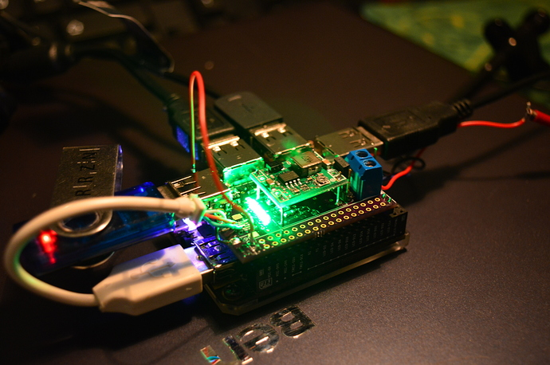
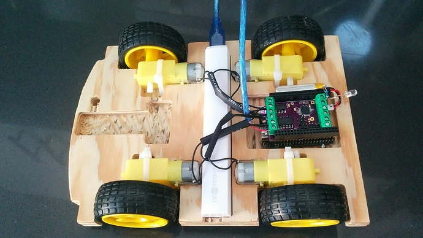

Welcome to GitHub Pages.
This github page is about the SALSA DIP for the C.H.I.P. (a $9 computer developed by NTC). The C.H.I.P. is a great board, a tiny linux computer that fits on your palm. But it is in the nature of non-realtime OS that certain functionalities are not available. This is where the SALSA kicks in. It provides a co-processor extension for the C.H.I.P. that is able to run realtime code and offers multiple hardware functionalities which are not available on the C.H.I.P. itself. The SALSA features a Atmel ATmega 328p-au as used on various other tinker board (e.g. the Arduino).
Features
- Connected to the C.H.I.P. via I2C, keeps all your C.H.I.P. pins untouched
- Simple Python3 interface can be used to send commands to and retrieve values from the SALSA
- Drive some awesome Ws2812 LED strings
- Use the four onboard N-MOSFET transistor to drive large strings of simple 12V (up to 36V,7A) LEDs and dimm them via PWM
- Analog read (0-5V) on three SALSA pins
- Use the six PWM signals to control e.g. a few servos
- SALSA provides 12 screw-terminals. 6 on the top and 6 on the bottom, making it really easy to connect to your project
- SALSA has an Arduino IDE compatible Bootloader. You can simply upload your Arduino Code on the SALSA, (e.g. distance measuring)
- Seamless power, the SALSA can be powered
- from the C.H.I.P. 5V output
- from the optional on-board DCDC regulator (mentioned below)
- from C.H.I.P.s battery
- An optional on-board DCDC regulator that allows me to power the SALSA from 7-28V DC and provides stable 5V with up to 3A current to the SALSA and the C.H.I.P.. (e.g. run your C.H.I.P. on the 12V from your car)
Power is a big issue on the C.H.I.P. most likely the #1 problem on the forum. The reason is that C.H.I.P. draws quite a lot current from the powersuppply (I've measured 350mA at idle, and ~500mA under load with spikes up to 650mA). If your powersupply can't handle those spikes with stable 5V but instead reduce the voltage C.H.I.P. crashes. I've measured the stability on a few of my phone chargers, which claim to be 1A stable. The first provided 4.65V at 350mA, the next 4.7V@350mA and went down to 4.2V when I started a CPU intense task. That when I've decided to add my own DCDC regulator.

This pictures actually shows the QUESO DIP, but it is the same DCDC regulator. At the moment I feed it with an old laptop charger, 80W at 20V give me a lot of backup and the worst I've seen was 4.75V at 1.5A load.
Motor-version
The SALSA II can be assembled with a L293DD motordriver instead of the PWM N-Mosfet. The real neat part is that is can use the PWM channels to drive real smooth curves.

This transforms the SALSA into a really easy to use robot driving DIP.
How to install the software
- 1. Install the SALSA on top of the C.H.I.P.
- 2. check if the C.H.I.P. can see the SALSA by running
sudo i2cdetect -y 1 0 1 2 3 4 5 6 7 8 9 a b c d e f 00: -- 04 -- -- -- -- -- -- -- -- -- -- -- 10: -- -- -- -- -- -- -- -- -- -- -- -- -- -- -- -- 20: -- -- -- -- -- -- -- -- -- -- -- -- -- -- -- -- 30: -- -- -- -- -- -- -- -- -- -- -- -- -- -- -- -- 40: -- -- -- -- -- -- -- -- -- -- -- -- -- -- -- -- 50: -- -- -- -- -- -- -- -- -- -- -- -- -- -- -- -- 60: -- -- -- -- -- -- -- -- -- -- -- -- -- -- -- -- 70: -- -- -- -- -- -- -- --
If you see the 0x04 (that is the SALSA I2C address) go on - 3. Run my autoinstall script
cd ~ wget https://github.com/KoljaWindeler/CHIP_SALSA/raw/master/install/install.sh sudo sh install.sh
This will take a minute and download all necessary code for you. It will also ask you if you want to run a little demo code. Take a look in the directory CHIP_SALSA/python for more demo code and how the connection works:- analog_dimm.py
- analog_read.py
- analog_write.py
- digital_read.py
- digital_write.py
- ws2812_moving_rainbow.py
- ws2812_rainbow.py
Support or Contact
Please post questions about the SALSA in the NTC forum at https://bbs.nextthing.co/t/salsa-dip-for-c-h-i-p-i2c-arduino-ws2812-pwm-motor